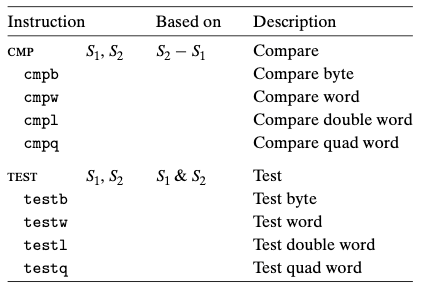
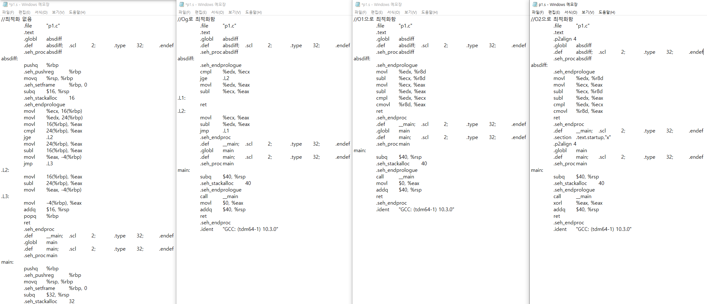

Chapter 03. 프로그램의 기계수준 표현
- 3.1 역사적 관점
- 3.2 프로그램의 인코딩
- 3.3 데이터의 형식
- 3.4 정보 접근하기
- 3.5 산술연산과 논리연산
- 3.6 제어문
3.6 제어문
- 일부 구문인 반복문, 스위치문들은 데이터에 적용된 시험결과에 따라 일련의 연산이 실행되는 조건부 실행이 요구된다.
- 기계어 코드에서는 조건부 동작을 구현하기 위해 두 개의 기본적인 낮은 수준의 방법을 제공한다.
- 데이터 값들을 시험해서 이 시험 결과에 따라 데이터흐름이나 제어흐름을 변경한다.
- 기계어 인스트럭션들의 실행 순서는 점프jump 인스트럭션으로 변경할 수 있다.
- 점프 인스트럭션은 때에 따라서는 어떤 시험의 결과에 따라 프로그램의 다른 일부분으로 제어를 넘겨준다.
3.6.1 조건 코드
- 정수 레지스터들과 함께 CPU는 가장 최근 산술 또는 논리연산의 특성을 설명하는 단일 비트 조건 코드로 구성된 레지스터들을 운영한다.
- 이 레지스터들은 조건부 분기를 수행하기 위해서 시험될 수 있다.
- CF: 캐리 플래그Carry flag. 가장 중요한 비트로부터 받아 올림이 발생한 것을 표시. 비부호형 연산에서 오버플로우를 검출할 때 사용
- ZF: 영 플래그Zero flag. 연산의 결과가 0인 것을 표시
- SF: 부호 플래그Sign flag. 연산이 음수를 생성한 것을 표시
- OF: 오버플로우 플래그Overflow flag. 양수/음수의 2의 보수 오버플로우를 발생시킨 것을 표시
- leaq 인스트럭션은 주소계산에 사용하기 위한 것이므로 조건 코드를 변경하지 않는다.

- 반면에, 위의 그림에 나열된 모든 인스트럭션들은 조건 코드 값을 변경한다.
- XOR 같은 논리연산에서는 캐리와 오버플로우 플래그가 0으로 세팅된다.
- 쉬프트 연산에서는 캐리 플래그가 쉬프트되어 없어지는 마지막 비트로 설정되며, 오버플로우 플래그는 0으로 세팅된다.
- 위의 그림의 인스트럭션들에 의해 조건 코드 값이 변경될 뿐만 아니라, 다른 레지스터들은 변경시키지 않으면서 조건 코드만 변경해 주는 두 개의 인스트럭션 클래스가 있다.(아래의 그림 참조) 
- CMP 인스트럭션들은 만일 두 오퍼랜드가 같으면 영 플래그르 1로 설정한다. 다른 플래그들은 두 오퍼랜드의 순서관계를 결정하는 데 사용될 수 있다.
- TEST 인스트럭션은 목적지 오퍼랜드를 변경하지 않으면서 조건 코드를 설정하는 점만 제외하고는 AND 인스트럭션과 같은 방식으로 동작한다.
3.6.2 조건 코드 사용하기
- 조건 코드를 이용하는 보편적인 세 가지 방법이 있다.
- 조건 코드의 조합에 따라 0 또는 1을 한 개의 바이트에 기록
- 조건에 따라 프로그램의 다른 부분으로 이동하는 방법
- 조건에 따라 데이터를 전송하는 방법
- SET 인스트럭션
- 첫 번째 경우의 인스트럭션의 클래스를 SET 인스트럭션이라고 부른다.
- 이 인스트럭션들은 접미어를 이용해서 오퍼랜드의 크기를 나타내는 것이 아니라, 조건 코드의 어떤 조합을 사용할 것인지를 나타낸다.
- ex) setl, setb -> long word와 byte를 의미하지 않고 less와 below를 의미한다.
- SET 인스트럭션은 목적지로 하위 단일 바이트 레지스터 가운데 한 개나 단일 바이트 메모리 주소를 사용하며, 이 바이트를 0이나 1로 기록한다.
- 32비트나 64비트 결과를 만드려면, 다른 상위 비트들을 0으로 만들어줘야 한다.
- a<b를 계산하는 전형적인 인스트럭션은 아래의 그림과 같이 작성된다.
3.6.3 점프jump 인스트럭션
- 일반적인 실행의 경우, 인스트럭션들은 나열된 순서에 따라 순차적으로 실행된다.
- 점프 인스트럭션은 프로그램이 완전히 새로운 위치로 실행을 전환하도록 한다.
- 점프의 목적지는 일반적으로 어셈블리 코드에서는 레이블label로 표시한다.
- 인스트럭션 jmp .L1은 프로그램이 movq 인스트럭션을 건너뛰는 대신에 popq로 실행을 다시 시작하게 한다.
- 어셈블러는 모든 레이블이 붙은 인스트럭션들의 주소를 결정하고, 점프 인스트럭션의 일부분인 “점프 목적지jump target”을 인코딩한다.
- 위 그림은 여러 가지 점프 인스트럭션을 보여준다.
- jmp 인스트럭션은 무조건적으로 점프한다.
- 점프 목적지가 인스트럭션의 일부로 인코딩 되는 경우에는 직접 점프
- 점프 대상을 레지스터나 메모리 위치로부터 읽어들여야 하는 경우에는 간접 점프
3.6.4 점프 인스트럭션 인코딩
- 점프 인스트럭션의 대상이 어떻게 인코딩 되는지 이해하는 것은 7장의 링커를 공부할 때 중요한 역할을 하게 된다.
- 어셈블리 코드에서, 점프 목적지는 심벌 레이블을 사용해서 작성한다.
- 점프를 인코딩하는 가장 일반적인 방법은 PC 상대적PC relative 방법이다.
- 대상 인스트럭션과 점프 인스트럭션 바로 다음에 오는 인스트럭션 주소와의 차이를 인코딩한다.
- 첫 번째 점프 인스트럭션의 목적지가 0x03으로 인코딩, 다음 인스트럭션의 주소인 0x05에 더하면 점프 목적지 주쇤 0x8을 얻을 수 있다.
- PC-상대 주소지정을 수행할 때 프로그램 카운터의 값은 점프 인스트럭션 자신의 주소가 아니라, 점프 다음에 나오는 인스트럭션의 주소가 된다.
- PC-상대 방식으로 점프 목적지를 인코딩하면, 인스트럭션들이 간결하게 인코딩(2바이트만 필요)될 수 있고, 목적코드는 수정 없이 메모리 상의 다른 위치로 이동될 수 있다.
3.6.5 조건부 분기를 조건제어로 구현하기
- C에서 조건부 수식과 문장을 기계어 코드로 번역하는 가장 일반적인 방법은 조건부 및 무조건 점프를 함께 사용하는 것이다.
- 어셈블리 코드에서의 무조건 점프와 유사한 C의 goto문을 사용한다.
- 어셈블리 코드의 제어흐름을 설명하는 C 프로그램을 구성하는 방법으로 사용됨
-
위의 그림은 조건문의 컴파일이다.
-
if-else
- 컴파일러는 else-문과 then-문에 대해 별도의 코드 블록을 생성한다.
- 정확한 블록이 실행되도록 조건부와 무조건 분기를 삽입한다.
3.6.6 조건부 이동으로 조건부 분기 구현하기
- 조건부 동작을 구현하는 전형적인 방법은 조건이 만족되면 프로그램의 한 가지 실행경로를 따르고, 아닌 경우에는 다른 경로를 따라가도록 하는 제어의 조건부 전환을 통해 이루어진다.
- 이 방법은 간단하고 일반적이지만 최신 프로세서들에서는 매우 비효율적일 수 있다.
- 또 다른 전략은 데이터의 조건부 전송을 이용하는 것이다.
- 이 방법은 조건부 동작의 산출물 모두를 계싼하고 조건에 따라 하나만 선택하는 방식이다.
- 최신 프로세서의 성능특성과 잘 일치하는 간단한 조건부 이동move 인스트럭션으로 구현될 수 있다.
- C버전을 공부하면, 이것이 y-x와 x-y 모두를 계산해서 rval, eval로 명명한다는 것을 알 수 있다.
- x가 y보다 크거나 같은지 테스트하고, 만일 그렇다면, eval을 Rval로 명명한다는 것을 알 수 있다.
- 조건부 제어 이동 기반 코드보다 조건부 데이터 이동 코드가 성능이 우수한 이유를 이해하기 위해서는 최신 프로세서들이 어떻게 동작하는지 이해해야 한다.
- 프로세서들은 각 인스트럭션을 일련의 단계로 처리하며, 이 단계들은 각각 요구된 동작의 작은 부분만을 실행하는 파이프라인을 통해 높은 성능을 얻는다.
- 이를 위해서는 파이프라인을 실행할 인스트럭션들로 미리 채우기 위해 실행할 인스트럭션들의 순서를 훨씬 일찍 결정할 수 있어야 한다.
- 결과적으로 분기의 예측오류 손실이 함수의 성능을 결정한다.
- 위의 그림은 x86-64로 가능한 조건부 이동 move 인스트럭션을 보여준다.
- 이들 인스트럭션은 두 개의 오퍼랜드를 갖는다.
- 소스 레지스터 또는 메모리 위치 S, 그리고 목적지 레지스터 R.
- 인스트럭션들의 결과는 조건 코드 값에 따라 달라진다.
- 소스 값은 메모리나 소스 레지스터로부터 읽히지만, 목적지에는 명시된 조건이 만족될 때만 복사된다.
이 이후로 조건부 분기의 “분기의 예측 오류”에 관한 내용이 나온다.
조건부 이동은 조건부 점프와는 달리 결과를 예측하지 않고서도 해당 인스트럭션을 실행할 수 있다.
조건부 이동을 사용한다고 해서 언제나 코드 효율성을 개선할 수 있는 것은 아니다.
컴파일러는 낭비되는 계산량과 분기 예측오류에 의한 잠재적 성능 손실 사이의 상대적 성능을 고려해야 한다.
등의 내용이 담겨져 있는데 이해하기 조금 힘들다….
3.6.6은 뒷부분을 좀 더 읽고 다시 읽으러 돌아오자!!!!!!!
조건부 분기에 따른 실제 어셈블리 코드
조건부 분기를 구하는 방법은 3.6.2에서 세가지 방법이 있다고 했으며, 3.6.5절과 3.6.6절에 조건제어와 조건부이동 두가지로 더욱 자세한 설명으로 풀어냈다. 두 가지의 방법은 예제코드를 활용하여 설명해줬는데 다음의 예제코드와 같다. (C 언어로 작성 되어있다.)
long absdiff(long x, long y){
long result;
if(x<y) result = y - x;
else reuslt = x - y;
return result;
}이 코드를 가지고 if문의 여러가지 어셈블리어로 표현할 수 있다고 표현하는데, 나는 같은 코드인데 기계는 어떻게 알고 다른 어셈블리어들을 생성해내는지가 너무 긍금했다.
다시말해 기계는 언제 조건부 이동을 하여 컴파일을하고, 언제 조건제어를 하여 컴파일을 하는지 너무 궁금했다!!!
궁금증을 참지 못하고 윈도우 환경에서 gcc 컴파일을 진행하였다.
- tdm-gcc를 설치했다.
- 터미널에
gcc -v명령어를 입력하면 설치 완료를 확인할 수 있다.- 위 예제의 코드를 txt 파일로 작성했다.(파일 이름은 p1으로 하였다.)
gcc -S p1.c명령어를 입력하면 어셈블리 코드를 생성할 수 있다.gcc -S -Og p1.c명령어를 입력하면 컴파일 최적화를 진행한다.-Og,-O1,-O2…으로 설정하면 단계별로 최적화를 적용한다.다음의 그림은
default,-Og,-O1,-O2의 결과다.
가독성을 위해서 main문과 디렉티브문은 삭제하였다.(*디렉티브: 어셈블러와 링커에 지시하기 위한 문장)

//최적화 없음
absdiff:
pushq %rbp
.seh_pushreg %rbp
movq %rsp, %rbp
.seh_setframe %rbp, 0
subq $16, %rsp
.seh_stackalloc 16
.seh_endprologue
movl %ecx, 16(%rbp)
movl %edx, 24(%rbp)
movl 16(%rbp), %eax
cmpl 24(%rbp), %eax
jge .L2
movl 24(%rbp), %eax
subl 16(%rbp), %eax
movl %eax, -4(%rbp)
jmp .L3
.L2:
movl 16(%rbp), %eax
subl 24(%rbp), %eax
movl %eax, -4(%rbp)
.L3:
movl -4(%rbp), %eax
addq $16, %rsp
popq %rbp
ret
//Og로 최적화함
absdiff:
cmpl %edx, %ecx
jge .L2
movl %edx, %eax
subl %ecx, %eax
.L1:
ret
.L2:
movl %ecx, %eax
subl %edx, %eax
jmp .L1
//O1으로 최적화함
absdiff:
movl %edx, %r8d
subl %ecx, %r8d
movl %ecx, %eax
subl %edx, %eax
cmpl %edx, %ecx
cmovl %r8d, %eax
ret
//O2으로 최적화함
absdiff:
movl %edx, %r8d
movl %ecx, %eax
subl %ecx, %r8d
subl %edx, %eax
cmpl %edx, %ecx
cmovl %r8d, %eax
retOg가 본문의 조건제어, O1이 조건이동에서 설명한 어셈블리어로 표현되어있다.
유레카를 발견한 것처럼…. 너무 속이 시원했다….
컴파일 명령어에서 최적화의 수준에 따라 어셈블리어 인코딩이 달라진다는 것을 직접 확인할 수 있었다.
3.6.7 반복문
- C에서는 여러가지 반복문 구문을 제공한다.
- do-while, while, for
- 기계어에는 반복문에 대응되는 인스트럭션이 없다.
- 그렇기 때문에 조건부 테스트와 점프를 함께 사용해서 반복문의 효과를 구현한다.
- do-while
- body-statement를 반복적으로 실행하고, test-expr를 계산하여 조건에 따라 반복 수행을 계속한다.
- body-statement가 적어도 한 번은 실행되는 점이 특이사항이다.
do
body-statement
while (test-expr);- while
- while문은 test-expr를 먼저 계산해서, body-statement를 실행하기 전에 종료될 수 있다.
- do-while 루프에서 우리가 본 것과 루프 구조가 동일하고, 초기 테스트의 구현방법에서만 다르다.
while (test-expr)
body-statement -
- while문은 두가지 번역 방법이 있다.
- 중간으로-점프jump-to-middle
- 조건부 do 번역 사용guarded-do
- while문은 두가지 번역 방법이 있다.
- for
while (test-expr)
body-statement
init-expr;
while (test-expr){
body-statement
update-expr;
}-
- 두 반복문이 동일한 동작을 한다.
- 먼저 초기화 수식인 init-expr를 계산한다.
- 테스트 조건인 test-expr를 계산하는 곳에서 루프에 들어가며
- 테스트가 실패하면 루프를 빠져나오고, 반복문 body-statement를 실행한다.
- 마지막으로 update-expr를 계산한다.
- for 루프에 대해 생성된 어셈블리 코드는 최적화 수준에 따라 while 루프의 번역 전략중 하나를 따른다.
3.6.8 Switch문
- Switch문은 정수 인덱스 값에 따라 다중분기 기능을 제공한다.
- C 코드를 읽기 쉽게 해줄 뿐만 아니라 점프 테이블이라는 자료구조를 사용해서 효율적인 구현을 간응하게 한다.
- switch문을 실행하는 데 걸리는 시간이 case의 수에 관계없다는 점이 장점이다.
- switch문을 실행하는 데 있어서 핵심 단계는 점프 테이블을 통해서 코드의 위치로 접근하는 것이다.